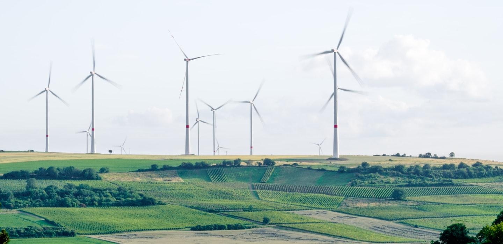

According to the United Nations, 700 million people (10% of the world’s population) still live in poverty. A shocking statistic by any account, but one that many of us forget as we get on with our busy lives and deal with our own personal stresses. What is less well known, or less discussed, is that people living in poverty need access to energy far more than their more affluent peers – to keep warm, to provide and prepare healthy food, and to access clean water. For those of us not living in poverty, access to energy is of course just as vital, but we have the means to provide warmth and food for ourselves and our families in multiple, easily accessible ways. We typically take these fundamental needs for granted.
Moving to clean energy is key to combating climate change, yet in the past five years, the energy transition has stagnated. Energy consumption and production contribute to two-thirds of global emissions, and 81% of the global energy system is still based on fossil fuels, the same percentage as 30 years ago. Plus, improvements in the energy intensity of the global economy (the amount of energy used per unit of economic activity) are slowing. In 2018 energy intensity improved by 1.2%, the slowest rate since 2010. Effective policies, private-sector action and public-private cooperation are needed to create a more inclusive, sustainable, affordable and secure global energy system. Benchmarking progress is essential to a successful transition. The World Economic Forum’s Energy Transition Index, which ranks 115 economies on how well they balance energy security and access with environmental sustainability and affordability, shows that the biggest challenge facing energy transition is the lack of readiness among the world’s largest emitters, including US, China, India and Russia. The 10 countries that score the highest in terms of readiness account for only 2.6% of global annual emissions.
Effects on education and health Sustainable energy is a critical enabler and dramatically improves the quality, accessibility and reliability of services that children rely on for their survival, development and well-being. In homes, for example, children need reliable access to modern lighting for their daily chores and to do homework after dark. need for heating and cooling to stay comfortable. health centres and schools require energy for lighting, operating medical devices and life-saving procedures, cooking, heating, cooling and digital connectivity. Low levels of electricity access are correlated with poor educational performance, lower attendance and a decreased ability to attract and maintain teachers. Sustainable energy measures provide considerable benefits in reducing indoor air pollution and related health risks, particularly for children. Indoor air pollution, largely caused by the burning of solid fuels, contributes to over half a million deaths of children under 5. Even more will suffer lasting damage to their developing brains and lungs.